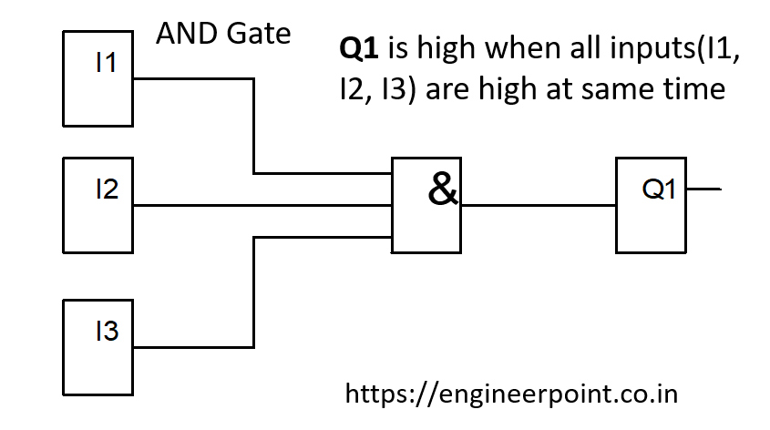
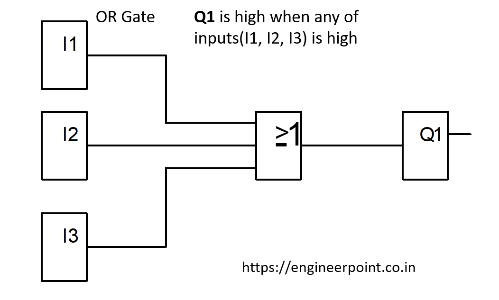
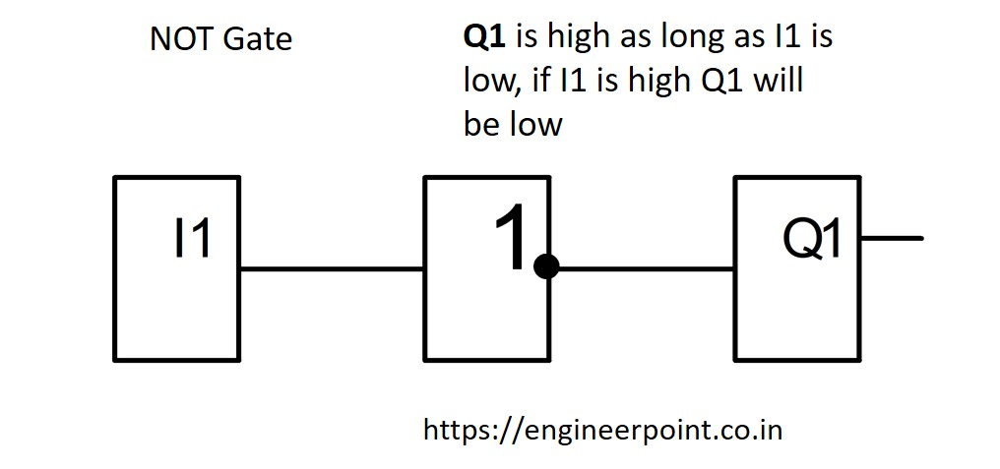

Logic Gates play important role in defining circuit processing. They are deciding factor whether circuit generate output or not. Different logical operators like AND gate, OR gate and NOT Gate are main logical operators.
In AND Gate, When all inputs are high at the same time only then output is generated. All input values most br high ie. 1 to get output generated.
Let I1 and I2 be two inputs connected in AND logic and Q1 be the output. Normally, both inputs are Low (0) and Q1 output is low. When I1 and I2 both are high(1) simultaneously, the output Q1 is High. If any one of them (I1 & I2) is low then Q1 is low.
Truth Table for AND Gate
| I1 | I2 | Q1 |
|---|---|---|
| 0 | 0 | 0 |
| 1 | 0 | 0 |
| 0 | 1 | 0 |
| 1 | 1 | 1 |
In OR gate when any one input among any two or more input, is high then output is generated. Any input should be high if output is to be generated.
Let I1 & I2 are two input & connected to Q1. Here normally when all are 0, then Q1 is o. But if any of them is high at any instance than output is generated or output becomes High(1). If more then 1 input are high at the same time than also Q1 will be high.
Truth Table for OR Gate
| I1 | I2 | Q1 |
|---|---|---|
| 0 | 0 | 0 |
| 0 | 1 | 1 |
| 1 | 0 | 1 |
| 1 | 1 | 1 |
In not gate when any input is high the output is set to low. All inputs values must be 0 to get output high.
Let I1 be input with not gate connected to Q1. Now, normally inputs are low, that means theres no any signal at point I1 output is high. If I1 is high then output is low.
Truth Table For NOT Gate
| I1 | Q1 |
|---|---|
| 0 | 1 |
| 1 | 0 |
Now lets consider NAND gate and NOR gate.
In NOR gate all inputs are connected to NOR gate logic. This means whenerver any input is high negation will be applied and then output will be low. In normal condition, if all inputs are low then output will be high. And if any input is high then output will be low. Such Logic gate is called NOR Gate.
Truth Table for NOR Gate
| I1 | I2 | I3 | Q1 |
|---|---|---|---|
| 0 | 0 | 0 | 0 |
| 0 | 0 | 1 | 0 |
| 0 | 1 | 0 | 0 |
| 1 | 0 | 0 | 0 |
| 0 | 1 | 1 | 0 |
| 1 | 1 | 0 | 0 |
| 1 | 0 | 1 | 0 |
| 1 | 1 | 1 | 0 |
In NAND gate all inputs are connected to NAND gate logic. Whenever all inputs are high, output will be low. If only one input is low then output will still remain high. Such logic gates are called as NAND Gate.
Truth Table for NAND Gate
| I1 | I2 | I3 | Q1 |
|---|---|---|---|
| 0 | 0 | 0 | 1 |
| 0 | 0 | 1 | 1 |
| 0 | 1 | 0 | 1 |
| 1 | 0 | 0 | 1 |
| 0 | 1 | 1 | 1 |
| 1 | 1 | 0 | 1 |
| 1 | 0 | 1 | 1 |
| 1 | 1 | 1 | 0 |